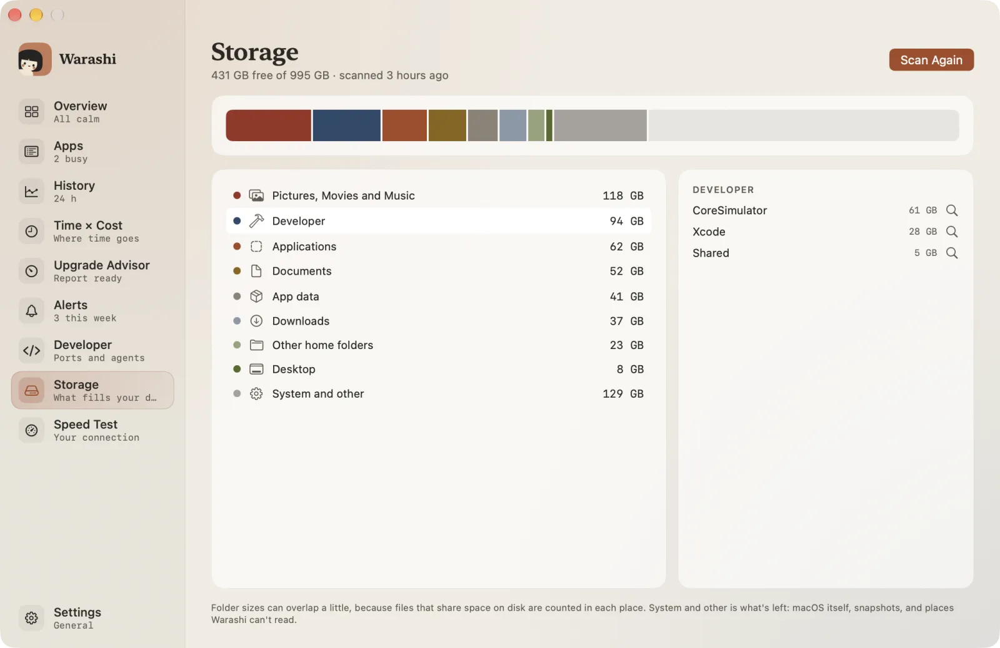
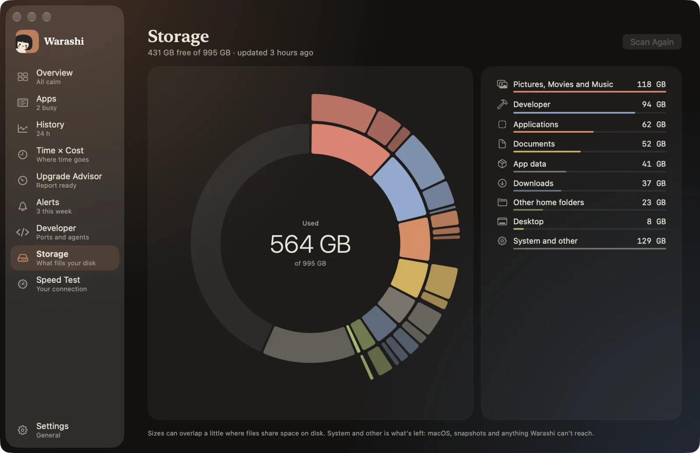
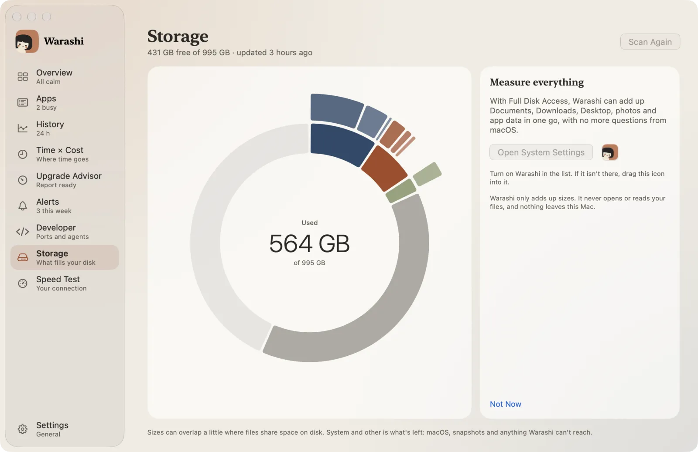
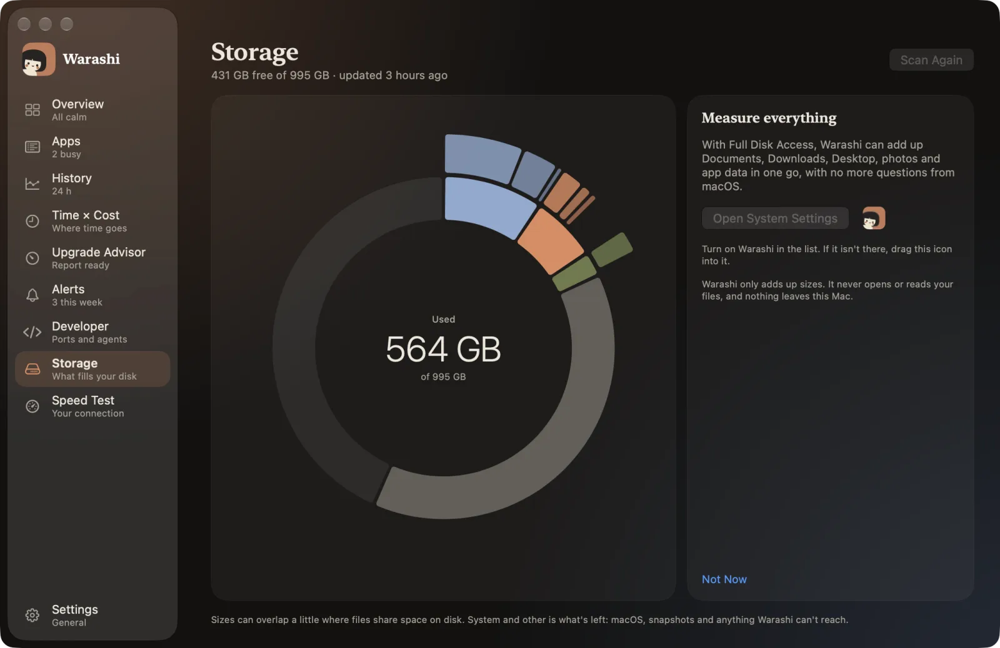
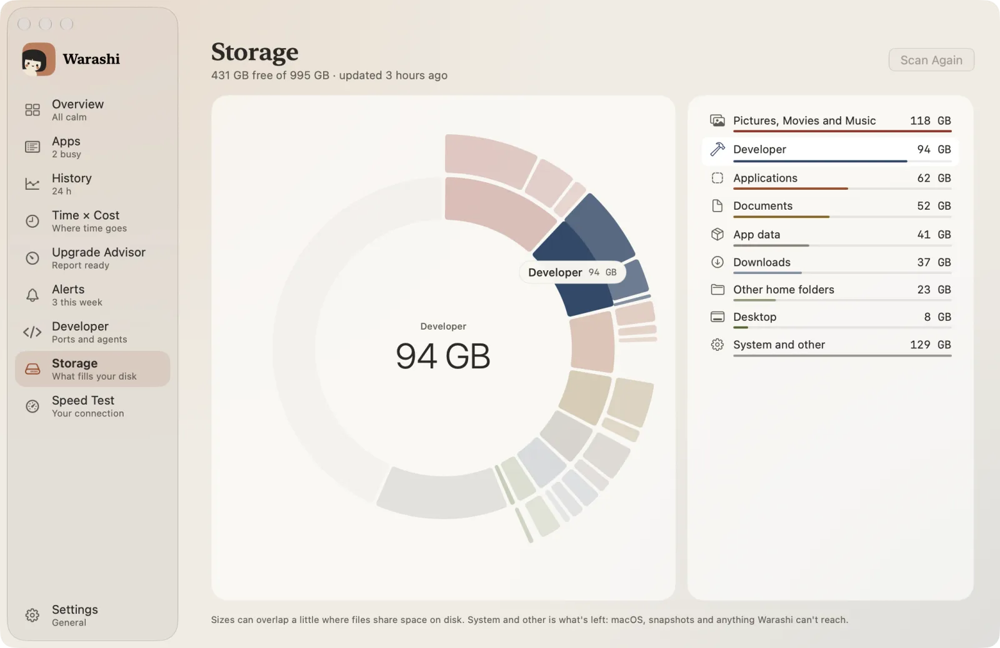
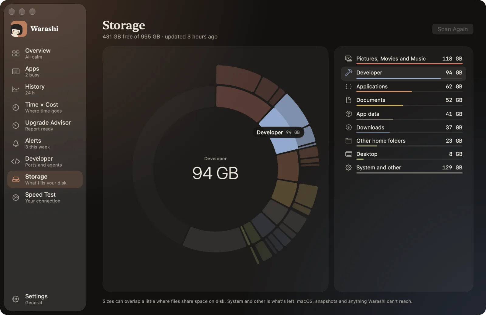

ストレージは、起動ディスクを使用しているものを表示します。開くと前回の結果が表示され、6時間以上前のものなら更新されます。何かを削除することは決してありません。
- ストレージを開く
サイドバーのストレージを選ぶか、⌘8を押すか、ポップオーバーのディスクタイルを押します。


- フルディスクアクセスをオンにする
ようこそツアーでこれを済ませていない場合は、カードで案内されます。システム設定を開くを押し、リストのWarashiを一度だけオンにしてください。これでストレージにデスクトップ、書類、ダウンロード、写真、アプリのデータを含められます。Warashiが読み取るのはサイズだけで、ファイルを読み取ることはなく、Macの外には何も出ません。スキップしてもかまいません。ストレージはそのほかの部分を測定し、macOSが作業を中断することはありません。


- リングを調べる
内側のリングはカテゴリと、システム、空きです。外側のリングは各カテゴリで最も大きいフォルダです。どこかにポインタを合わせると名前とサイズが表示され、それ以外は薄くなって、リストの該当する行が点灯します。


- 中身を確認する
カテゴリを選ぶと、そのカテゴリの大きな項目が表示されます。虫めがねを押すとFinderに表示され、どうするかをそこで決められます。
- 好きなときにスキャンする
再スキャンはいつでも押せます。スキャン中はページを離れてもよく、各カテゴリは終わるたびにリングに加わっていきます。
カテゴリの意味
- デベロッパ： Xcodeのデータとシミュレータ。
- アプリのデータ： デベロッパを除く、ライブラリフォルダ内のすべて。
- ゴミ箱： 空にするのを待っているもの。
- その他のホームフォルダ： Codeフォルダなど、ホームフォルダ直下にあるそのほかのすべて。
- システムとその他： 残りの部分。macOS自体、スナップショット、Warashiが読み取れない場所。
補足： ディスク上で領域を共有しているファイルはそれぞれの場所で数えられるため、フォルダのサイズが多少重複することがあります。
うまくいかないときは
- macOSが繰り返しアクセスを求める： 今後は起こらないはずです。設定 › アップデートで、Warashiを最新バージョンにアップデートしてください。
- フルディスクアクセスが必要な場所があります： リストのその行を押してから、システム設定を開くを押します。Warashiがリストにない場合は、アイコンをドラッグして入れてください。それでも集計されない場合は、Warashiを開き直すを押します。
詳しくはトラブルシューティングをご覧いただくか、adam@warashi.appまでメールでお問い合わせください。